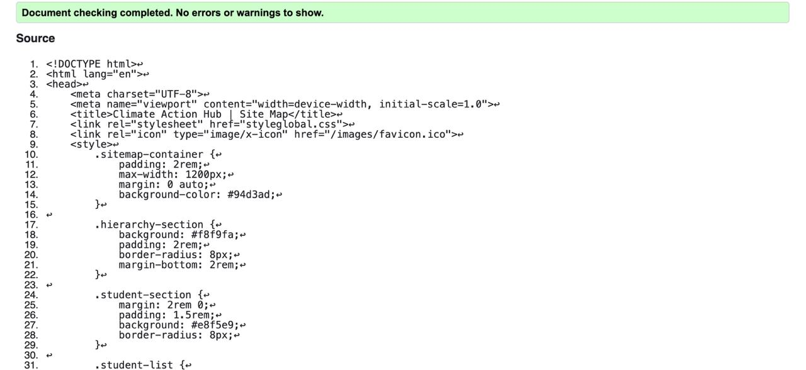
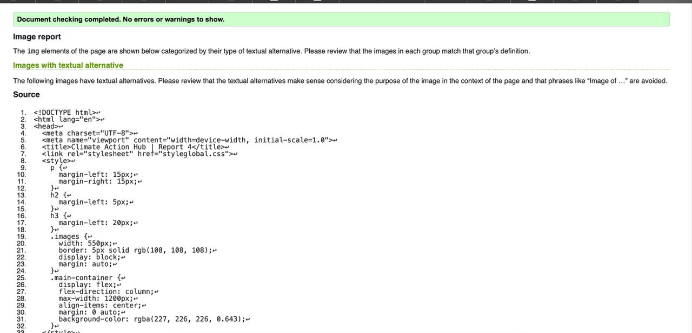

Sithuli Basnayake - Student 04
Profile Page validation report
In constructing the profile dashboard, HTML and CSS permit for an orderly yet attractive layout.
The !DOCTYPE html helps with loading compatible with HTML5 while html lang="en" is present for
increased accessibility. Header is the logo plus navigation bar ( nav with ul class="nav-links" /ul)
in a div class="wrapper" in order to all the body for centering to return to what it once was.
Back to Page Editor page
Site-Map Page validation report
Include a short reflection on the validation report for the pages you implemented.
Back to Page Editor page
Content Page validation report
This HTML and CSS code creates a well-structured and appealing profile dashboard. With the DOCTYPE html, the code is HTML5 compliant, and html lang="en" enhances accessibility. In head, there is metadata, styleglobal.css and style.css linked as stylesheets, and a favicon. body, with a wrapper div class="wrapper" to center content, contains a header with a logo and a navigation bar. Sections in main elaborate on the various mechanisms of climate change, temperature trends, extreme weather events, oceanic changes, feedback mechanisms, mitigation strategies, and Conclusion. Elements such as img tags with their captions make it accessible loads. responsive through CSS properties Like display: flex;. In the validation report, minor problems like some images that do not have alt attributes, redundant br tags, and improperly nested elements were reported. Minor CSS warnings were additionally fixed and proper semantic markup ensured, allowing improvement of the overall readability, usability, and structure of the report and better compliance with industry standards.
